Importing Data and Building a Reusable Excel Workflow
Opening scenario
Every month, the scheduling team sends you a fresh appointment export, along with two reference files that rarely change: a provider list and a clinic lookup. In Chapter 6 you built a scorecard from one clean file. Now comes the question that decides whether that scorecard survives past its first month: how does next month’s data get in?
The tempting path is to open each file, copy the rows together, delete the columns you do not want, and start calculating. That path works exactly once. It breaks the moment a new export arrives, and it leaves no record of how the final table was built, so no one, including you, can reproduce the result or explain it when a number is questioned. This chapter builds the professional alternative. You import each file without altering it, record every transformation as a repeatable step, and turn next month’s update into a single refresh.
By the end of this chapter, you will be able to:
- Import CSV and text data into Excel without altering the raw source.
- Use Power Query to build transformation steps that refresh when new data arrives.
- Append files that share a structure and merge reference tables on a shared key.
- Separate raw sources, working tables, and outputs within a documented workflow.
- Lay out imported data in spreadsheet-ready form and document it with a codebook.
- Set each column’s data type on import so identifier codes keep their leading zeros.
- Document data sources and steps so an analysis can be repeated and defended.
Key concepts
If you cannot re-run your analysis when a new file arrives, you do not have an analysis. You have a result you produced once and cannot defend. The work of this chapter is to replace a one-time cleanup chore with a process that runs again on demand.
The chapter builds that process in three habits, each a section below:
- Protect the source so the original data stays recoverable.
- Record the steps so the transformation can be replayed on new data.
- Document the result so the analysis can be reproduced and trusted.
Figure 1 previews the whole workflow these habits build.
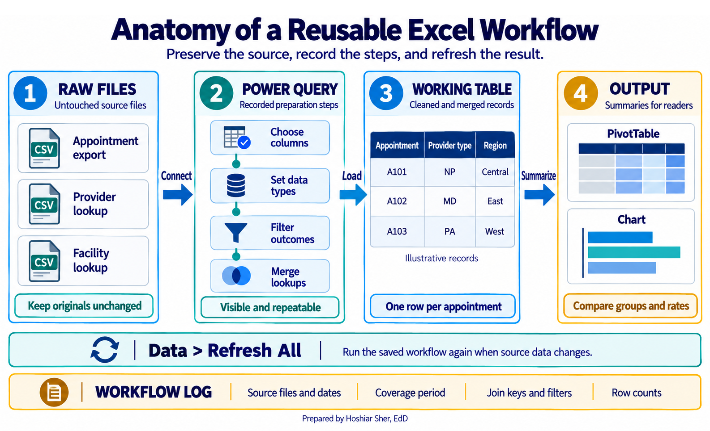
Protecting the source: raw, working, and output
The first rule of import is to never treat the file you received as your working table. Source files arrive in whatever shape the sending system produced, and once you edit one directly, you can no longer tell what was original and what you changed.
A reliable workbook separates data into three zones:
- Raw data is the source, kept exactly as received and never edited by hand.
- Working data is the transformed copy that your analysis is built on.
- Output is the summaries, charts, and scorecards a reader sees.
Raw data is source data preserved exactly as received, so it stays recoverable and auditable. Working data is the cleaned, transformed copy that analysis is actually built on.
Keeping the three zones apart is what makes a result traceable. When a number is questioned, you can walk back from the output, through the working table, to the untouched source, and show every step in between. The raw, working, and output zones in Figure 1 make that chain visible.
Spreadsheet-ready layout and the codebook
Before you transform anything, decide how the imported table should be shaped. Spreadsheet-ready data, also called tidy data, follows a few plain rules (Wickham, 2014; Broman & Woo, 2018):
- one row per unit of analysis,
- one variable per column,
- one value per cell,
- consistent codes throughout.
A column of dates holds dates in one format, not 3/1,
March 1, and last Monday mixed together. A
yes-or-no field holds one pair of values everywhere, not Y,
yes, and 1 in the same column. These rules
sound fussy, but every later step, the filtering, grouping, joining, and
summarizing, depends on them. Figure 2 shows the same records entered
two ways.
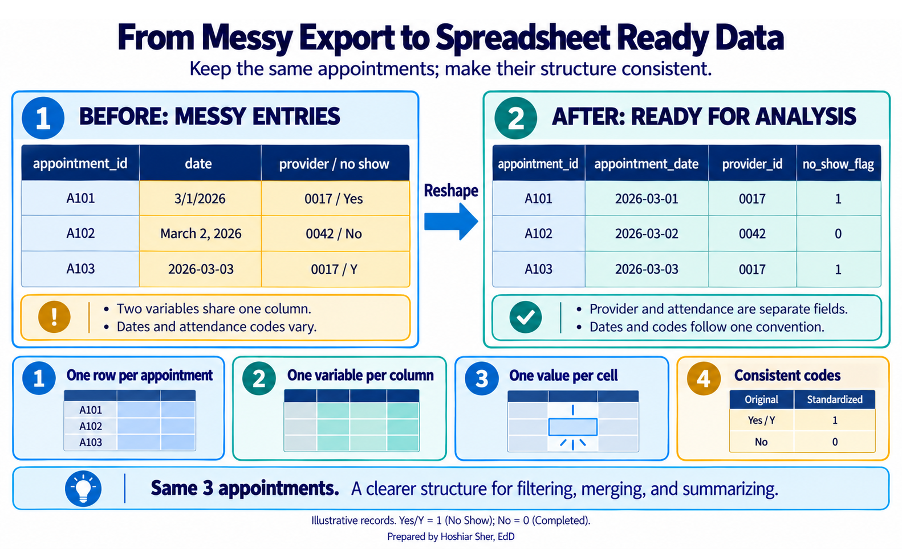
Spreadsheet-ready layout also depends on each column holding the
right data type, and the safest habit is to decide the
type on import rather than after. Codes that look like numbers are the
classic trap: a county FIPS or ZIP code such as 01029 loses
its leading zero the moment it is read as a number, which quietly breaks
every later join. Import identifier codes as Text, even
when they contain only digits, and type date columns as
Date so that 3/1 is never misread.
Figure 3 shows the four cases you meet most often.
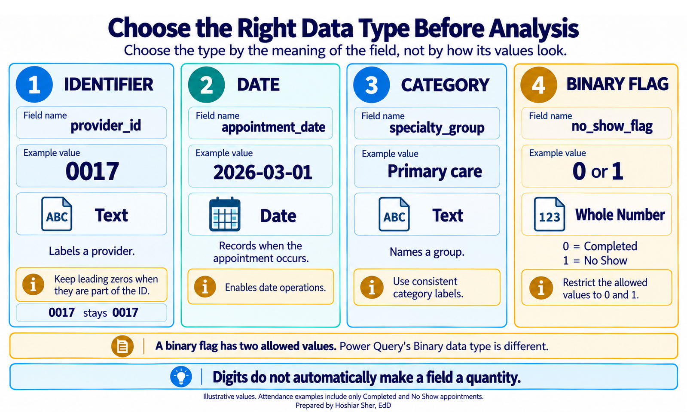
Decide the type on import, not after. An identifier read as a number
drops its leading zeros (01029 becomes 1029),
and a date read as text cannot be filtered or sorted by time. In Power
Query, set code columns to Text and date columns to
Date in the Changed Type step, and confirm
the type icon on each column header before you continue.
A tidy table is only half a deliverable. The other half is the codebook, also called a data dictionary, which records for each column its name, meaning, type, and allowed values.
A codebook (or data dictionary) records, for each column, its name, what it means, its data type, and its allowed values.
Chapter 5 treated the codebook as a governance requirement; here it
is also a personal habit. Without one, sdoh_risk_score is a
mystery column and a flag that reads 2 could
mean anything. With one, a colleague, or you in six months, can use the
data without guessing. Figure 4 shows a short codebook beside the table
it documents.
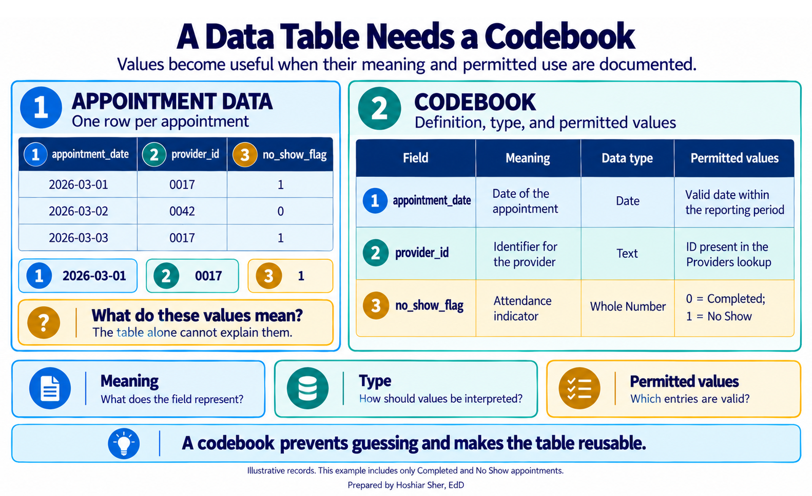
Power Query records your steps
Power Query is Excel’s data-preparation layer (Escobar & Puls, 2021). You connect to a file, shape it through a graphical editor, and Power Query records each change as a step. When new data arrives, those steps replay in order.
A query is a recorded sequence of transformation steps that reads from a source and produces a table. Each step appears in the Applied Steps list, which you can review, reorder, or edit at any time.
This changes how you think about import. Import is not a one-time
event; it is a pipeline you can re-run. Figure 5 shows the Power Query
Editor, where the Applied Steps list keeps a sequence like
Source, Changed Type,
Removed Other Columns, and Filtered Rows
visible rather than hidden inside manual edits (Microsoft, 2026).
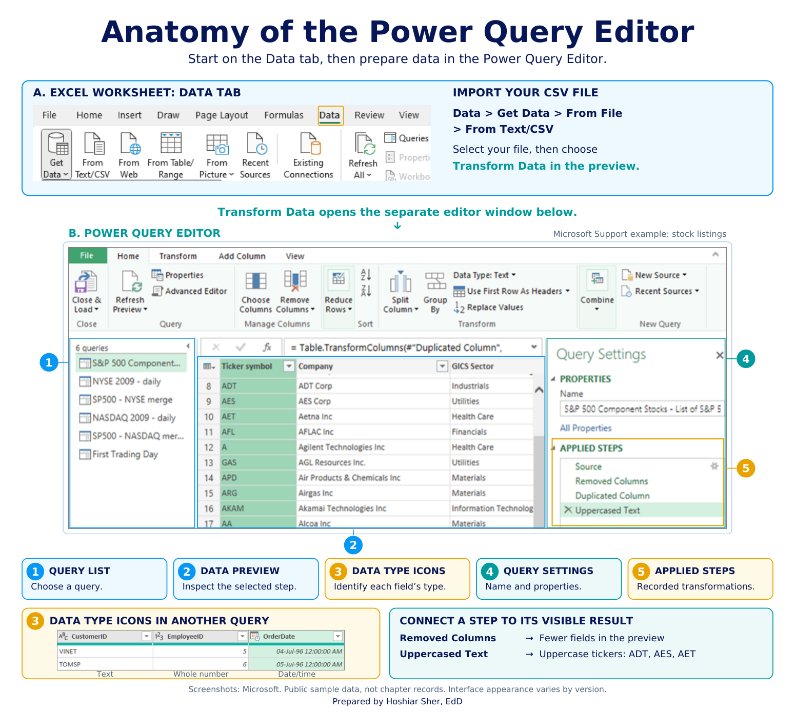
This walkthrough is written and tested for desktop Excel on Windows. Current Microsoft 365 versions of Excel for Mac (version 16.69 or later) support Power Query, but the entry point is Data > Get Data (Power Query) and a few load options differ. Power Query is not in Excel 2016 or Excel 2019 for Mac. Excel for the web can refresh an existing query, and some Microsoft 365 plans now allow limited Power Query editing in the browser, but browser support varies by plan, so follow along in desktop Excel for the full walkthrough.
Appending and merging: adding rows versus adding columns
Healthcare data rarely arrives as one complete file, so you combine files in two different ways. The difference matters, because they answer different questions and have different risks.
- Append stacks the rows of files that share the same structure, such as twelve monthly exports with identical columns. Append adds rows.
- Merge joins columns from a related table using a shared key, such as adding a provider’s type from a provider list. Merge adds columns.
Figure 6 contrasts the two. This is the point where Chapter 4’s lesson on keys and the unit of analysis becomes practical: a merge uses a key, and whether that key is unique decides what the merge does to your rows.
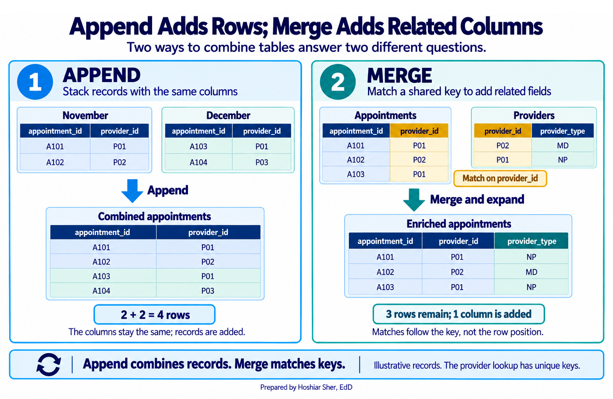
Verifying that a merge did not multiply rows
A merge can quietly change the number of rows in your table, and that is the trap to watch for.
- If the key you join on is unique in the reference table, each row finds at most one match, and the row count does not change.
- If the key is not unique, one row can match several, and expanding the merged column multiplies the rows. The summaries built on them are then wrong.
A merge needs two checks, not one.
- Cardinality: compare the row count before the merge and after you expand it. If the count grew, the key was not unique in the reference table, so expanding produced duplicates you did not intend.
- Match completeness: confirm the expanded columns
are not blank. Turn on Column quality and switch it to
the entire data set, because it profiles only the first 1,000 rows by
default (Microsoft, 2025). A left outer join keeps every original row
even when the keys do not match, so an unchanged row count with empty
provider_typeorregionvalues means the keys did not line up.
Because the editor’s preview counts only the first rows, read the true count with Transform > Count Rows, not the status bar.
Figure 7 shows the three outcomes a merge can produce: one match keeps the row count and fills the new column, no match keeps the count but leaves the column blank, and multiple matches inflate the count.
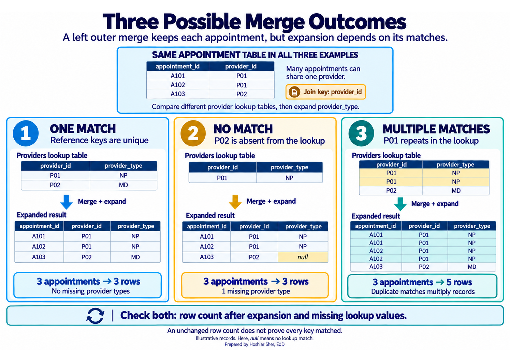
Walkthrough: build a refreshable appointment workflow
This build turns three separate files into one cleaned, merged table that refreshes on command. You import the monthly appointment export, add provider and clinic attributes from two reference tables, and summarize the result, all without editing a single source file. Figure 8 maps the path this build follows.
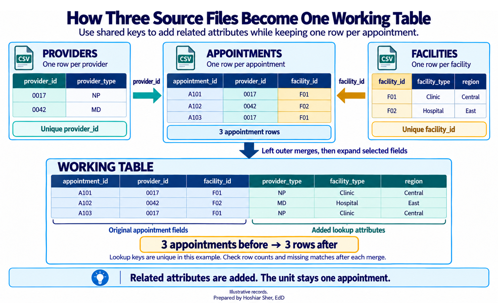
Before you start: put the three source files in a folder named
raw and do not edit them. Open a new workbook and save it
as ch07_workflow.xlsx. Every transformation happens inside
the workbook’s queries, never in the source files.
Part A. Import the appointment export. Bring the file in through Power Query so the source stays untouched.
- On the Data tab, choose Get Data > From File > From Text/CSV (on a Mac, Data > Get Data (Power Query), then Text/CSV).
- Select
raw/DS2_appointments_clean.csvand click Import. - In the preview window, confirm that Delimiter reads Comma and the first row is treated as headers, then click Transform Data, not Load. The Power Query Editor opens.
- In the Query Settings pane on the right, confirm
the Applied Steps list shows
Source,Promoted Headers, andChanged Type(From Text/CSV addsPromoted Headersautomatically when the first row holds the column names). - In the Name box, type
Appointmentsand press Enter.
Part B. Clean the query, then load it as a connection. Shape the table, verify its size, and set it aside for merging.
- On the Home tab, choose Choose Columns >
Choose Columns. Check only
appointment_id,patient_id,provider_id,facility_id,appointment_date,appointment_weekday,specialty_group,attendance_outcome, andno_show_flag, then click OK. - Click the small type icon to the left of the
appointment_dateheader and choose Date. - Set
no_show_flagto Whole Number, and confirmattendance_outcomeandspecialty_groupare Text. - Select
specialty_group, then choose Transform > Format > Trim to remove any stray spaces. - Click the dropdown arrow on
attendance_outcome, uncheck everything exceptCompletedandNo Show, and click OK. - Read the true row count. The status bar counts only the preview, so
choose Transform > Count Rows instead: the table
becomes a single value,
30571. Note it as your baseline, then delete theCounted Rowsstep from Applied Steps so the table returns. - On the Home tab, choose Close & Load
> Close & Load To, select Only Create
Connection, and click OK. You return to Excel,
and
Appointmentsappears in the Queries & Connections pane.
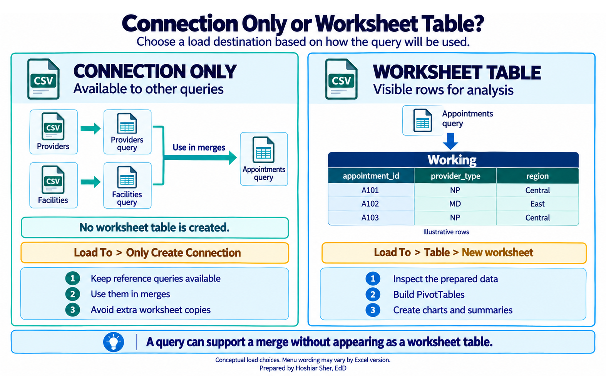
Part C. Import the two reference tables as connections. You do not need these on a sheet, only available to merge (Figure 9).
- Choose Data > Get Data > From File > From
Text/CSV, select
raw/DS1_provider_dim.csv, and click Transform Data. Rename the queryProviders, and use Choose Columns to keepprovider_idandprovider_type. - On the Home tab, choose Close & Load > Close & Load To, select Only Create Connection, and click OK.
- Repeat steps 13 and 14 for
raw/DS1_facility_dim.csv, naming the queryFacilitiesand keepingfacility_id,facility_type, andregion.
Part D. Merge the provider list. Add each appointment’s provider type.
- In the Queries & Connections pane, double-click
Appointmentsto reopen the editor. - On the Home tab, choose Merge Queries.
- Click the
provider_idcolumn inAppointments, chooseProvidersfrom the lower dropdown, and click itsprovider_idcolumn. - Set Join Kind to Left Outer and click OK. A new column appears at the right.
- Click the expand icon (the two arrows) on the new column’s header,
uncheck Use original column name as prefix, keep only
provider_type, and click OK.
Part E. Merge the clinic list. Add each appointment’s facility type and region.
- Choose Home > Merge Queries again, match
facility_idtoFacilities[facility_id], set Left Outer, and click OK. - Expand the new column, keep
facility_typeandregion, and click OK.
Part F. Verify the merge two ways. Confirm it added columns, not rows, and that every key matched.
- Cardinality. Choose Transform > Count
Rows; the result is
30571, the same as your baseline, so expanding the merges added columns, not rows. Delete theCounted Rowsstep to restore the table. Had the count grown, a reference key would not have been unique. - Match completeness. On the View
tab, check Column quality. By default it profiles only
the first 1,000 rows, so click the message in the lower-left corner of
the window and switch it to Column profiling based on entire
data set. Confirm
provider_type,facility_type, andregioneach read 100% valid with 0% empty. Empty values would mean the keys did not match, even though the row count did not change.
Part G. Load the working table. Send the cleaned, merged query to a sheet.
- On the Home tab, choose Close &
Load. Because
Appointmentsis currently connection-only, Close & Load To may be unavailable from the editor, so set the destination from Excel instead: in the Queries & Connections pane, right-clickAppointments, choose Load To, select Table and New worksheet, and click OK. Double-click the sheet tab and rename itWorking. - Confirm the result on the sheet with a formula:
=ROWS(Appointments[appointment_id])returns30571, and=COUNTBLANK(Appointments[region])returns0. (Appointmentsis the name Excel gives the loaded Table.)
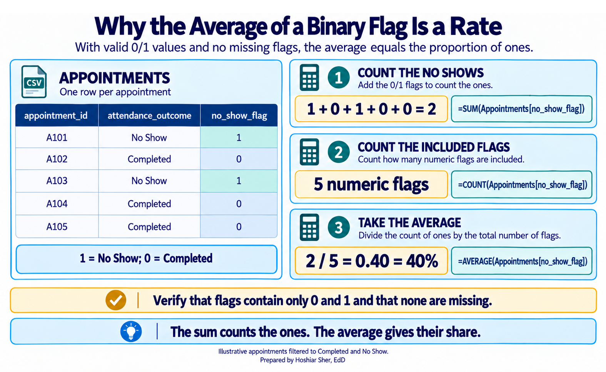
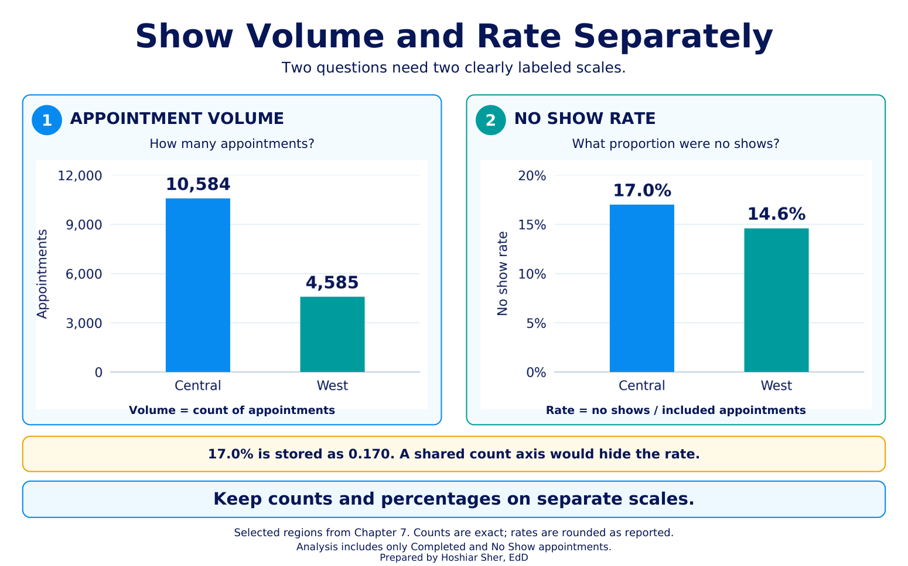
Part H. Build and chart a summary. Reuse the PivotTable skill from Chapters 3 and 4 on the merged table; the average of the 0/1 no-show flag is the no-show rate (Figure 10). Because counts dwarf a rate near 0.16, chart the volume and the rate on separate scales (Figure 11).
- Click any cell in the
Workingtable and choose Insert > PivotTable. Place it on a new sheet namedOutput. - Drag
regionto Rows. - Drag
appointment_idto Values; it shows as Count of appointment_id. - Drag
no_show_flagto Values as well, click it, choose Value Field Settings > Average, and format it as a percentage with one decimal. - Read the result. The five regions read
Central10,584,East6,849,South5,358,West4,585, andNorth3,195, and they sum to30,571. The no-show rate is highest inCentral, about17.0%, and lowest inWest, about14.6%. - Chart the rate on its own. Because the counts run to the thousands
and the rate sits near 0.16, one chart of both would flatten the rate to
invisibility. Add a second PivotTable on
Outputwithregionon Rows and only the Average ofno_show_flagin Values, formatted as a percentage. - Select the second PivotTable and choose PivotTable Analyze
> PivotChart > Clustered Bar, titled
No-show rate by region. On the first PivotTable, apply Home > Conditional Formatting > Data Bars to the count column so the volumes stay visible.
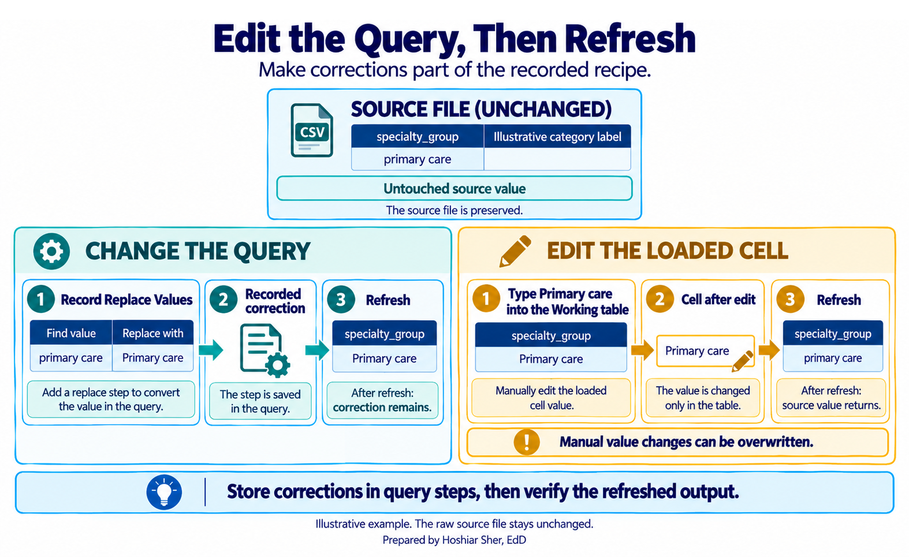
Part I. Refresh without overwriting the source. Keep every export recoverable, and make every correction in the query rather than in the loaded table (Figure 12).
- Never overwrite a file in
raw, and decide which kind of update you have. If you are replacing the current two-year extract, save the new one under a dated name, such asraw/DS2_appointments_2026-01.csv, and edit theSourcestep of theAppointmentsquery to point at it. - If instead you receive one new month at a time, do not repoint the
Sourcestep. This query reads the cumulative two-year file, so pointing it at a folder of only the new months would drop that history. Add each new month with the Append path in Part J instead, stacking it onto the existing data. The From Folder option (Windows) fits a different setup: a query built from the start on araw/appointments_monthly/folder that holds the complete history as one file per month. In that setup you drop each new month into the folder and refresh, but you never also keep the cumulative two-year file in the folder, or the overlapping rows will duplicate. - After either update, choose Data > Refresh All;
every step, the working table, and the PivotTable re-run. On a
Logsheet, record the source file names, the extract date, the coverage window, the join keys (provider_idandfacility_id), the baseline and post-merge row counts, and the filter to completed and no-show appointments. Add a short codebook for the columns you kept, then save.
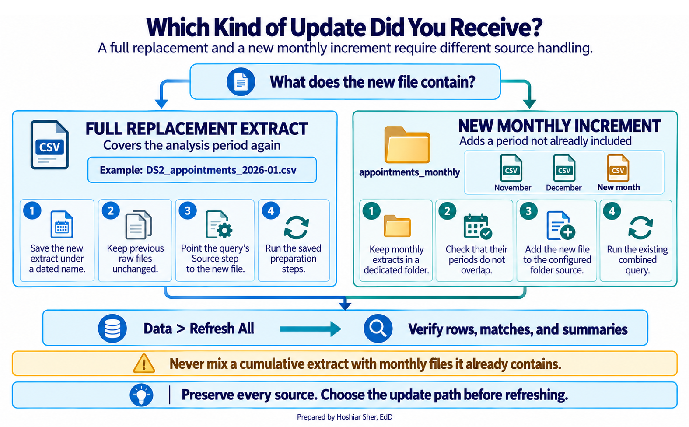
Part J. Append monthly files. Stack several months
into one table. Before you do, decide which kind of update you received
(Figure 13): a full replacement means repointing the Source
step, while a new monthly increment is appended onto the existing data,
as you do here.
- Create a folder
raw/appointments_monthly/and placeDS2_appointments_2025-11.csvandDS2_appointments_2025-12.csv(supplied with the datasets) inside it, with no other files. - Import each file with From Text/CSV as its own
query, named
NovandDec, giving both the same columns and types. - Select the
Novquery, then choose Home > Append Queries > Append Queries as New and addDec. A new query stacks the two, November’s rows followed by December’s. - Read the count with Transform > Count Rows:
3056, the sum of1437November and1619December rows. These are the raw monthly exports, so3056counts all attendance outcomes, unlike the walkthrough’s30571, which was filtered to completed and no-show appointments. On Windows you can instead point From Folder atraw/appointments_monthly/to append every month at once; Append Queries is the path that also works on a Mac.
Every column on the working table traces back to an untouched, dated source file, and nothing was edited by hand. A row count only means something alongside its population (Figure 14); overlapping extracts would double count if the cumulative and monthly folders were mixed (Figure 15); and the workflow log records the chain so the result can be reproduced and defended (Figure 16). When next month’s export arrives, you add it and refresh, and the whole chain re-runs the same way.
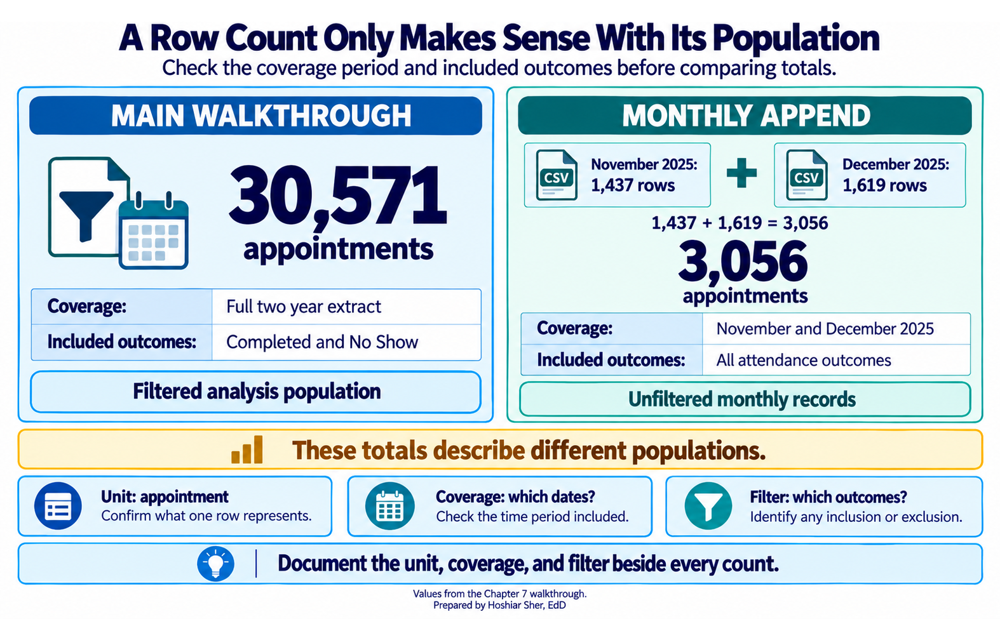
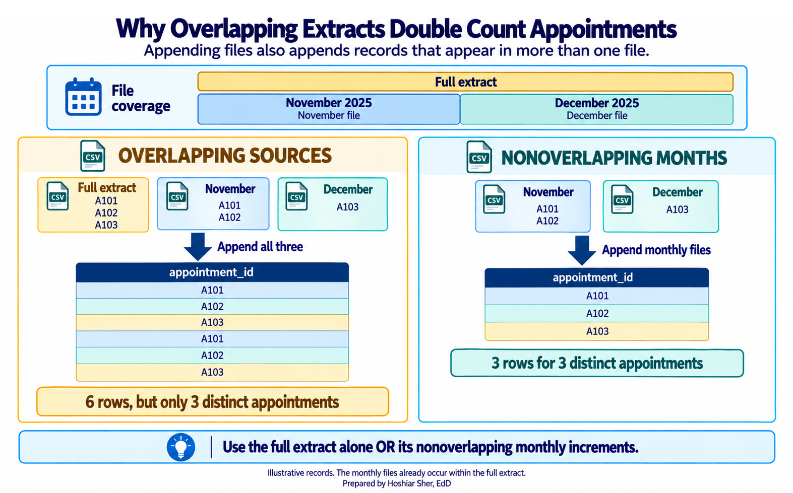
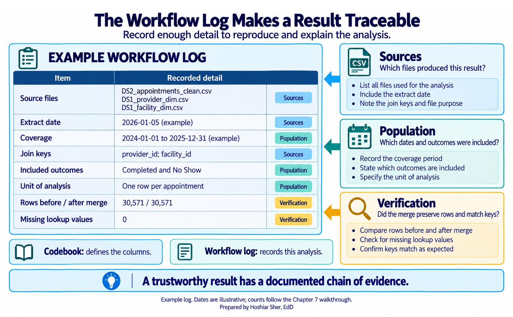
Practice on your own
These two exercises reuse the walkthrough’s techniques on new questions. The first is fully guided, like the walkthrough, so you have a second worked example to lean on. The second fades the support: it names the step and the files and gives you a value to check against, but leaves you to assemble the query yourself, which is the real skill. Try each block before checking the answer key.
Practice A: a provider-attendance workflow
Build a complete workflow, from import to chart, that reports the no-show rate by provider type and by specialty. This exercise is fully guided, like the walkthrough.
- Open a new workbook and save it as
ch07_providers.xlsx. - Choose Data > Get Data > From File > From
Text/CSV and select
raw/DS2_appointments_clean.csv. - In the preview, click Transform Data to open the editor.
- In the Name box, type
Appointments. - Choose Home > Choose Columns, keep
appointment_id,provider_id,specialty_group,attendance_outcome, andno_show_flag, and click OK. - Set
no_show_flagto Whole Number and confirmattendance_outcomeis Text. - Filter
attendance_outcometoCompletedandNo Show. - Confirm the total with Transform > Count Rows
(
30571), then delete theCounted Rowsstep so the table returns. - Choose Home > Close & Load > Close & Load To
> Only Create Connection to set
Appointmentsaside and return to Excel. - Choose Data > Get Data > From File > From
Text/CSV, select
raw/DS1_provider_dim.csv, and click Transform Data. Rename itProviders. - In
Providers, use Choose Columns to keepprovider_idandprovider_type, then choose Home > Close & Load > Close & Load To > Only Create Connection. - Reopen the
Appointmentsquery from the Queries & Connections pane. - Choose Home > Merge Queries, match
provider_idtoProviders[provider_id], set Left Outer, and click OK. - Expand the new column, uncheck the prefix option, and keep
provider_type. - Verify: Transform > Count Rows returns
30571, then delete theCounted Rowsstep. On the View tab, turn on Column quality, switch it to based on entire data set, and confirmprovider_typeshows 0% empty. - Choose Home > Close & Load. If Close
& Load To is unavailable because the query is
connection-only, right-click
Appointmentsin the Queries & Connections pane and choose Load To > Table > New worksheet. Rename the sheetWorking. - Click any cell in the
Workingtable and choose Insert > PivotTable on a new sheet namedOutput. - Drag
provider_typeto Rows,appointment_idto Values (Count), andno_show_flagto Values as well, set to Average and formatted as a percentage. - Right-click a value in the count column and choose Sort > Sort Largest to Smallest.
- Apply Home > Conditional Formatting > Data Bars to the count column.
- Chart the rate on its own: add a second PivotTable with
provider_typeon Rows and only the Average ofno_show_flagin Values, then select it and choose PivotTable Analyze > PivotChart > Clustered Bar, titledNo-show rate by provider type. - Add a third PivotTable from the
Workingtable on theOutputsheet. - Put
specialty_groupon Rows, with a Count ofappointment_idand an Average ofno_show_flagformatted as a percentage. - Apply All Borders and a light header fill to the PivotTables.
- Add a
Logsheet recording the two source files, the extract date, the join key (provider_id), and the filter assumption. - Save the workbook.
Expected result: the provider-type table shows six types,
NP 10,909, MD 10,017, PA 3,363,
RN 3,353, DO 1,826, and
Behavioral health clinician 1,103, summing to
30,571. Among those types, the highest no-show rate is
Behavioral health clinician at about 17.8% and
the lowest is PA at about 14.5%. The specialty
table shows eight groups, led by Primary care 20,257 and
trailed by OB/GYN 558, also summing to 30,571;
its highest no-show rate is Behavioral health at about
18.5% and its lowest is Urgent care at about
11.2%. No row is blank, because every key matched. Check
your workflow against Figure 17.
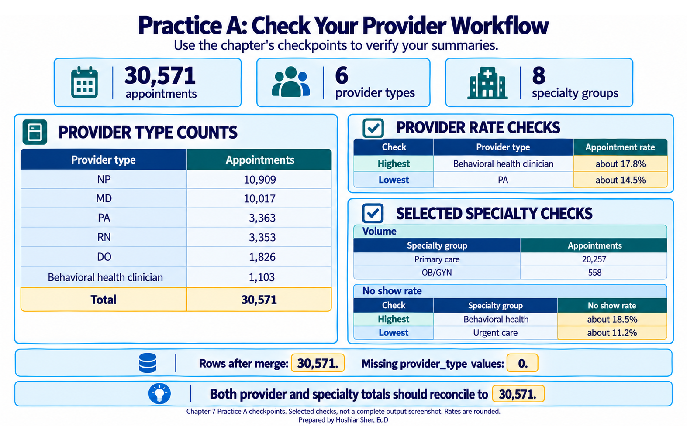
Practice B: an emergency-department workflow
Prove that the same import-and-merge moves work on a different dataset. Build an ED workflow that reports visit volume and the left-without-being-seen rate by payer group. This exercise names each step and gives you a value to check against, but leaves the specific choices to you.
- Create a new workbook and save it as
ch07_ed.xlsx. Putraw/DS3_ed_throughput_clean.csvandraw/DS1_payer_dim.csvin yourrawfolder. - Import the ED file with Power Query, opening the editor rather than loading straight to a sheet. (Which button opens the editor?)
- Rename the query
ED. - Keep only the columns this question needs: the encounter id,
payer_id, andleft_without_being_seen_flag. (Use Choose Columns.) - Set
left_without_being_seen_flagto Whole Number. - Read the true count with Transform > Count Rows
and note it, then delete the
Counted Rowsstep. (It should be 18,000.) - Set
EDaside as a connection and return to Excel. (Which Close & Load option creates a connection only?) - Import the payer file as a separate query, opening the editor. (Which button opens the file in the Power Query Editor rather than loading it straight to a worksheet?)
- Rename it
Payers. - In
Payers, keep onlypayer_idandpayer_group, then load it as a connection only. - Reopen the
EDquery to begin the merge. - Start a merge from the Home tab. (Which command combines columns from another query?)
- Choose the column the two tables share as the match. (Which
column appears in both
EDandPayers?) - Set the join kind so that every ED visit is kept. (Which join kind keeps all of the left table’s rows?)
- Confirm the merge. A new column appears at the right.
- Expand the new column and keep
payer_grouponly, unchecking the name-prefix option. - Verify cardinality with Transform > Count Rows,
compared with step 6, then delete the
Counted Rowsstep. (Still 18,000? If it grew, the key was not unique.) - Verify match completeness: on the View tab, turn on
Column quality, switch it to based on entire
data set, and confirm
payer_groupshows 0% empty. - Load the merged
EDquery to a Table on a New worksheet, and name the sheetWorking. If Close & Load To is greyed out because the query is connection-only, use Close & Load, then right-clickEDin Queries & Connections and choose Load To > Table > New worksheet. - Insert a PivotTable on a new sheet named
Output. - Put
payer_groupon Rows. - Add a Count of the encounter id to Values.
- Add
left_without_being_seen_flagto Values as an Average, formatted as a percentage. (This is the left-without-being-seen rate; the flag is never blank, so it covers all visits.) - Sort the table by visit count, largest to smallest, and add data bars to the rate column.
- Chart the rate on its own with a Clustered Bar PivotChart built from a second, rate-only PivotTable.
- Add a
Logsheet recording the two source files, the extract date, the join key, and the columns you kept, then save.
Check your work: the ED file holds 18,000 visits, and
the merge keeps it at 18,000. The six payer groups,
Commercial 7,334, Medicare 4,527,
Medicaid 2,406, Exchange 1,735,
Self-pay 1,474, and Other 524, sum to
18,000. The left-without-being-seen rate is
3.2% overall, ranging from 2.8%
(Self-pay) to 3.6% (Exchange). If
the total grew after the merge, the payer_id values in
Payers are not unique, so check Payers for
duplicate keys. Confirm your result against Figure 18.
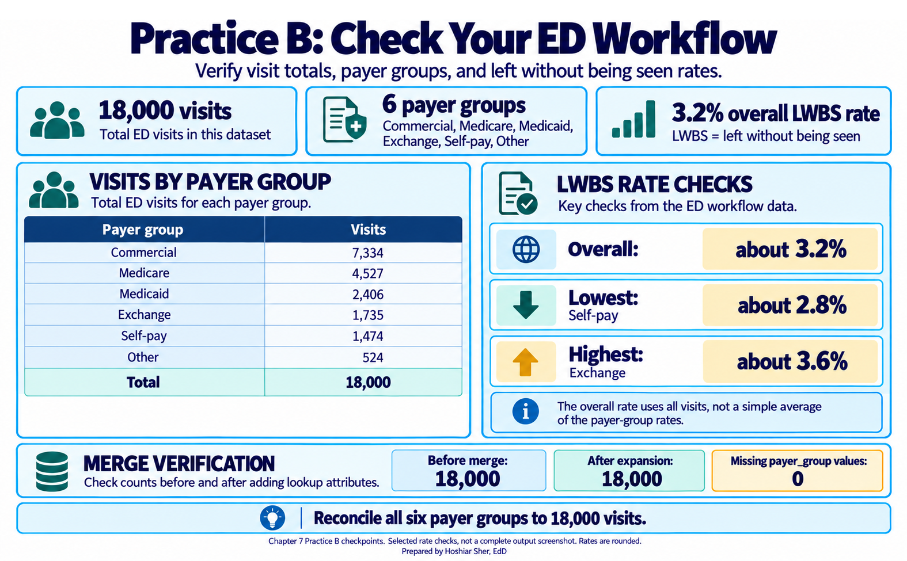
Going deeper
A merge multiplies rows only when the reference key is not unique, so the habit that protects you is to know the grain of the table you are joining to. A provider list has one row per provider and a clinic list one row per clinic, so joining appointments to either adds columns without adding rows (Figure 19). A claim-line file, by contrast, has many rows per claim, so joining a claim header to it will multiply. When you find yourself writing the same query for file after file, or your reference tables outgrow a worksheet, that is the signal to move the data into a database and let a tool built for joins do the work. Power Query is the on-ramp to that way of thinking, not the final destination.
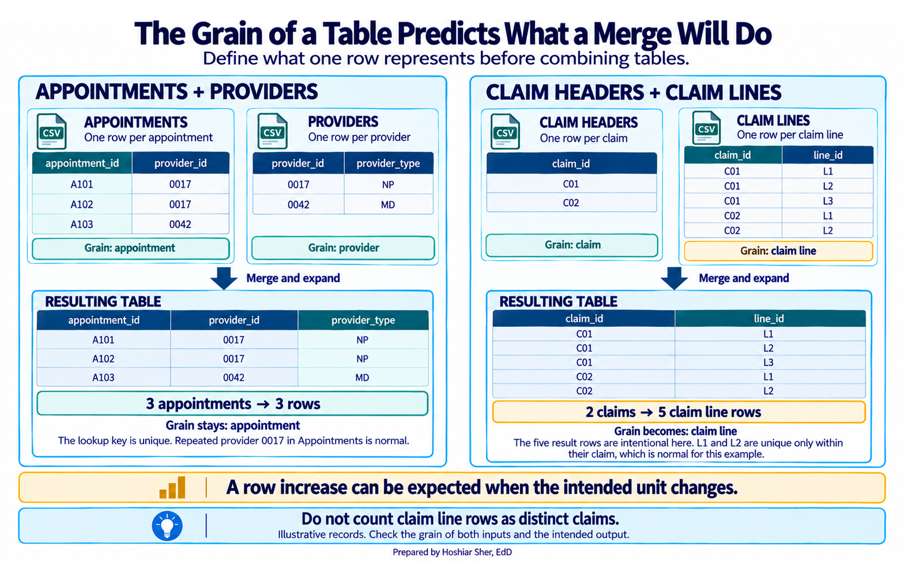
Real-world spotlight
The following is an illustrative scenario, not a specific organization. An analyst was asked to reproduce last quarter’s utilization number and could not. The original had been built by hand: files pasted together, columns deleted, totals typed in. Nothing was written down, and the source files had since been overwritten. The team rebuilt the analysis as a refreshable Power Query workflow, and the next time the question came back, the answer took minutes instead of days. The difference was not skill. It was that the second version could be re-run and explained.
- Keep raw source files exactly as received; do the work downstream in a query so the source stays recoverable.
- Lay data out spreadsheet-ready, one row per unit and one variable per column, and record a codebook for each column.
- Set each column’s data type on import, reading identifier codes as text so leading zeros survive.
- Power Query turns import into a pipeline of visible, refreshable steps rather than a one-time edit.
- Append adds rows from files with the same structure; merge adds columns from a related table using a shared key.
- Check a merge two ways: did the row count grow (a duplicated key), and are any expanded columns blank (keys that did not match)?
- Document sources, extraction dates, coverage, and assumptions, because a healthcare analysis is a chain of evidence, not just a number.
- Explain the difference between an append and a merge, using the appointment, provider, and facility files as your example.
- A new month’s appointment export arrives. List the steps that add it to your analysis without rebuilding the workbook.
- Name four items a workflow log should record, and explain why each matters if the result is later challenged.
- After a merge, your row count rose from
30,571to roughly61,000. State the most likely cause and one way to confirm it. - Explain why you should edit the query, not the loaded table, when a transformation needs to change.
- You receive a provider list with two rows for one provider. Explain what will happen if you merge it to the appointments, and how you would catch it.
- A ZIP code column imports as a number, turning
02139into2139. Explain what went wrong and how you would prevent it when importing.
An append stacks rows from files with the same columns, such as twelve monthly appointment exports; a merge adds columns from a related table through a shared key, such as attaching
provider_typeandregionto each appointment. Append grows the table downward; merge grows it sideways.If the new file is a single month, add it with the Append path (Part J): stack the new month’s query onto the existing data and choose Data > Refresh All, so the recorded steps re-run without rebuilding the workbook. Do not repoint the
Sourcestep for an increment, because this query reads the cumulative two-year file and repointing it would drop that history; repoint only for a full replacement extract, such as a corrected two-year export. (A query built from a monthly folder is the exception: there you simply drop the new file into the folder and refresh.) Either way, every earlier source stays recoverable.A workflow log should record the source file names, the extract date, the coverage window, and the join keys and assumptions. Each matters because, if the result is challenged, you can show exactly which files produced it, for what period, and how they were combined, so the analysis can be reproduced and defended.
The join key was not unique in the reference table, so each appointment matched several reference rows, and expanding the merged column multiplied the table. Confirm it by reading Transform > Count Rows before and after, or by checking the reference table for duplicate keys. A different fault, an unchanged count with blank expanded columns, points instead to keys that did not match at all.
The loaded table is an output; the query is the recorded recipe. Editing the query keeps the step list truthful and refreshable, while editing the output by hand breaks reproducibility, because the change is lost the next time the query refreshes.
The appointments that use that provider will each match both rows, so those appointments double in the result and every count built on them is inflated. You would catch it by comparing the row count before and after the merge; a count that grew signals a duplicated key.
The column was read as a number, which drops leading zeros, so
02139became2139. A ZIP code is a label, not a quantity, so import identifier codes as Text by setting the type in theChanged Typestep, and confirm the type icon before you build on the column.
- Broman, K. W., & Woo, K. H. (2018). Data organization in spreadsheets. The American Statistician, 72(1), 2-10. https://doi.org/10.1080/00031305.2017.1375989
- Escobar, M., & Puls, K. (2021). Master your data with Power Query in Excel and Power BI: Leveraging Power Query to get and transform your task flow. Holy Macro! Books.
- Microsoft. (2025). Using the data profiling tools. Microsoft Learn. https://learn.microsoft.com/power-query/data-profiling-tools
- Microsoft. (2026). About Power Query in Excel. Microsoft Support. https://support.microsoft.com/en-us/office/about-power-query-in-excel-7104fbee-9e62-4cb9-a02e-5bfb1a6c536a
- Wickham, H. (2014). Tidy data. Journal of Statistical Software, 59(10), 1-23. https://doi.org/10.18637/jss.v059.i10
- Raw data
- Source data kept exactly as received, so it stays recoverable and auditable.
- Working data
- The transformed copy of the data that analysis is built on.
- Output
- The summaries, charts, and scorecards a reader sees, built from the working data.
- Spreadsheet-ready data
- Data laid out tidily, with one row per unit, one variable per column, one value per cell, and consistent codes.
- Codebook
- A record of each column’s name, meaning, type, and allowed values; also called a data dictionary.
- Power Query
- Excel’s data-preparation layer, which records refreshable transformation steps.
- Query
- A recorded sequence of steps that reads from a source and produces a table.
- Applied Steps
- The list in the Power Query Editor that shows each recorded transformation in order.
- Append
- Combining files with the same structure by stacking their rows.
- Merge
- Joining columns from a related table to a main table using a shared key.
- Join key
-
The column shared by two tables that a merge matches on, such as
provider_id. - Left outer join
- A merge that keeps every row of the main table and attaches matching columns from the reference table.
- Refresh
- Re-running a query’s recorded steps so the output reflects updated source data.
- Connection-only query
- A query that is loaded for use in merges but not written to a worksheet.
- Workflow log
- A short record of source files, dates, keys, and assumptions that makes an analysis reproducible.
Cite this chapter
@incollection{sher2026ch07,
author = {Sher, Hoshiar J.},
title = {Importing Data and Building a Reusable Excel Workflow},
booktitle = {Introduction to Healthcare Data Analytics Using Excel},
year = {2026},
doi = {10.5281/zenodo.23327956},
url = {https://yar177.github.io/intro-to-HDA-site/ch07.html}
}